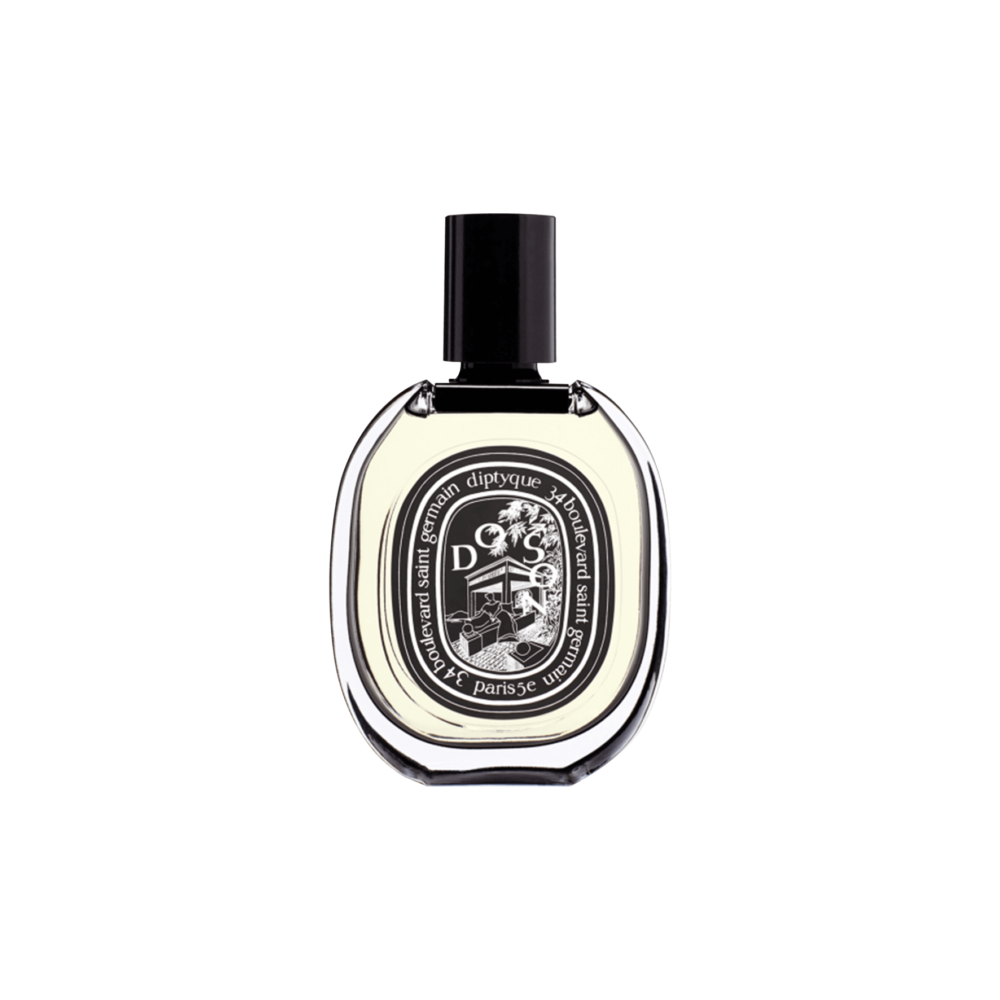
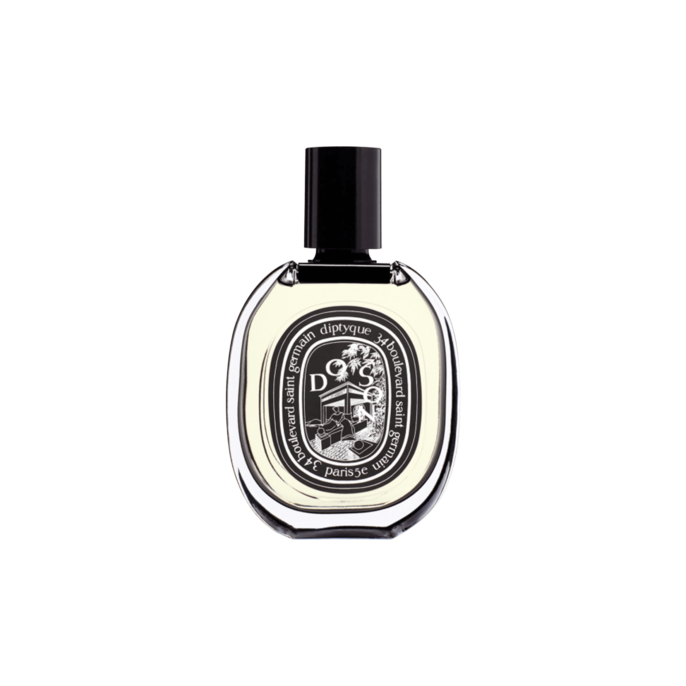

Rose Damascena

Note: heart
Family: floral
Type: absolute
Origin: Morocco
Ingredient Notes
Considered "the queen of flowers", rose appears in perfumery in hundreds of varieties. Not only are roses the most romantic of flowers to look at: they’re an absolute cornerstone of perfumery. Rose absolute is a warm, sweet floral with soft, spicy undertones. It can be used any number of ways: as part of a floral bouquet, combined with rich amber.
Prominent In
Rose Anonyme (Atelier Cologne), Rose Oud (By Kilian), Coup de Foudre (Parfums DelRae), Stella (Stella McCartney)
Blends Well With
Flowers, Spices, Woods, Musk, Citrus
-13-
Neroli

Note: heart
Family: floral
Type: essential oil
Origin: Tunisia / Morocco
Ingredient Notes
Neroli essential oil is produced by steam distilling the flowers of the bitter orange tree. It is more floral and less green than petit grain which is produced from the tree's twigs and leaves. Neroli has a delicate aroma that starts out slightly green and bitter and becomes more sweet and floral. Neroli’s perfect in white florals, or in Colognes, which accent its citrus.
Prominent In
Neroli (Annick Goutal), L'Eau de Neroli (Diptyque), Neroli 36 (Le Labo), Eau de Cologne (Penhaligon’s), Amour Florale (Kenzo)
Blends Well With
Woods, Jasmine, Vanilla, Benzoin, Musk
-14-

 
